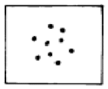
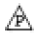
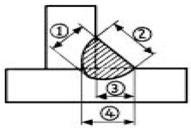
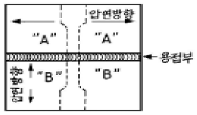

침투비파괴검사산업기사(구) (2005-03-20 기출문제)
1과목: 침투탐상시험원리
1. 후유화성 염색침투탐상시험에서 유화제의 기능은?
- 건식현상제가 붙어 있도록 피막을 형성한다.
- 형광침투제 또는 염색침투제 성능을 증대시킨다.
- 물로 세척이 가능하도록 표면의 침투제와 반응한다.
- 침투제를 깊게 자리잡은 균열에 신속히 침투하게 한다.
(정답률: 알수없음)

2. 침투탐상시 현상제의 기능이 아닌 것은?
- 결함속의 침투제를 빨아 낸다.
- 지시의 관찰을 용이하게 한다.
- 침투제를 분산 또는 확산되게 한다.
- 두껍게 도포하면 작은 침투지시가 더욱 잘 보이게 된다.
(정답률: 알수없음)
3. 균열이나 틈새로 액체가 침투하는 현상은?
- 적심
- 흡입
- 포화
- 모세관현상
(정답률: 알수없음)
4. 침투탐상시험의 침투시간에 대한 설명으로 옳지 않은 것은?
- 미세한 결함을 탐상하기 위해서는 침투시간을 다소 길게 적용한다.
- 저온에서 검사하는 경우에는 침투시간을 다소 길게 적용한다.
- 후유화성 침투제를 사용하는 경우에는 침투시간을 다소 길게 적용한다.
- 일반적으로 단조품을 검사하는 경우에는 침투시간을 다소 길게 적용한다.
(정답률: 알수없음)
5. 다음 중 침투탐상검사에 의한 결함검출도에 영향을 미치지 않는 것은?
- 시험체의 표면 상태
- 침투탐상제의 감도
- 시험체의 표면 온도
- 시험체의 열처리 상태
(정답률: 알수없음)
6. 침투탐상시험시 물의 오염이 상대적으로 심각하지 않은 탐상제는?
- 수세성 침투제
- 후유화성 침투제
- 용제제거성 침투제
- 건식 현상제
(정답률: 알수없음)
7. 침투탐상검사의 전처리 방법중 기계적 방법 분류에 속하는 것은?
- 고압용수 또는 증기세척
- 염기성 세척
- 증기 탈지
- 용제 분무
(정답률: 알수없음)
8. 다음 중 침투 탐상제의 품질관리시 형광성을 검사할 필요가 없는 것은?
- 수세성 형광침투액
- 후유화성 형광침투액
- 후유화성 염색침투액
- 용제제거성 형광침투액
(정답률: 알수없음)
9. 침투탐상시험에서 페인트가 있는 부분의 전처리작업에서 가장 먼저 행하여야 하는 공정은?
- 표면을 완전히 닦아낸다.
- 표면에 침투액을 뿌린다.
- 페인트를 제거한다.
- 페인트면을 활성화 한다.
(정답률: 알수없음)
10. 침투액의 물리적 성질 중, 침투 성능의 우수성을 결정하는데 중요한 두가지 성질은?
- 중력 및 적심성
- 적심성 및 표면장력
- 밀도 및 적심성
- 표면장력 및 탄성력
(정답률: 알수없음)
11. 세척처리는 침투탐상시험 조작순서 중 가장 경험을 필요로 하는 중요한 요소이다. 세척 부족이 원인이 되어 일어나는 현상에 관해서 옳게 서술한 것은?
- 결함지시모양의 식별이 곤란해진다.
- 현상처리가 곤란해진다.
- 유화처리가 곤란해진다.
- 후처리가 곤란해진다.
(정답률: 알수없음)
12. 침투탐상시험시 탐상제의 관리는 탐상결과에 많은 영향을 주게 되는데, 다음 중 가장 자주 점검해야 하는 탐상제의 성능은?
- 침투제 형광의 밝기
- 유화제의 물오염
- 건식현상제의 오염
- 습식현상제의 농도
(정답률: 알수없음)
13. 침투탐상시험법에 의한 누설시험은 침투제의 어떤 성질을 이용한 것인가?
- 모세관 현상
- 습윤 작용
- 화학 반응
- 고점성
(정답률: 알수없음)
14. 침투탐상시 현상제 선택에 대한 설명 중 틀린 것은?
- 매끈한 면에는 건식이 좋다.
- 습기를 가진 면에는 습식이 좋다.
- 대량 생산품에는 수성 습식이 좋다.
- 미세하고 깊은 균열에는 비수성 습식이 좋다.
(정답률: 알수없음)
15. 침투탐상검사의 특징이 아닌 것은?
- 침투탐상검사는 표면 개구부에 한한다.
- 침투시간은 재질, 시험방법, 결함의 종류에 관계없이 일정하다.
- 침투탐상은 모세관현상(Capillary Action)의 원리를 이용한 것이다.
- 재질에 거의 구애받지 않는다.
(정답률: 알수없음)
16. 다음 중 구상흑연 주철의 구상화율 정도 파악에 활용되는 비파괴검사법은?
- 방사선투과시험
- 초음파탐상시험
- 자분탐상시험
- 침투탐상시험
(정답률: 알수없음)
17. 염색침투탐상법과 형광침투탐상법을 병행해서 검사할 경우 수행해야 하는 검사 순서는?
- 형광 침투탐상검사를 먼저 실시한다.
- 염색 침투탐상검사를 먼저 실시한다.
- 어느 방법을 먼저 수행하든 상관없다.
- 두가지 방법을 병행해서 수행할 수 없다.
(정답률: 알수없음)
18. 섭씨 온도 50℃를 화씨(℉) 온도로 환산하면?
- 90
- 1⑤
- 122
- 154
(정답률: 알수없음)
19. 세척처리후에 현상제를 사용하지 않고 결함지시모양을 만드는 현상법은?
- 습식현상법
- 속건식현상법
- 건식현상법
- 무현상법
(정답률: 알수없음)
20. 시험품 표면의 전처리 기술중 틀린 것은?
- 경유는 트리클렌 세척제가 적합하다.
- 중유나 그리스는 트리클렌 증기세척이 적합하다.
- 무기오염물은 일반적으로 수용성 세척제가 적합하다.
- 녹, 스케일 등 고형(固形) 오염물은 연한 재질의 시험품의 경우 샌드페이퍼나 그라인더가 적합하다.
(정답률: 알수없음)
2과목: 침투탐상검사
21. 침투액을 개구부에 쉽게 침투시키기 위한 대중적인 적절한 방법은?
- 시험편을 진동한다.
- 시험편을 가열한다.
- 분사압력을 높인다.
- 침투액을 가열한다.
(정답률: 알수없음)
22. 후유화성 염색침투탐상시험법의 단점은?
- 전원 장치가 필요한 것이 단점이다.
- 대형 시험품이나 구조물의 부분 탐상에 부적합한 것이 단점이다.
- 조작 공정이 단순한 것이 단점이다.
- 검사 비용이 다른 방법에 비해 비싼 것이 단점이다.
(정답률: 알수없음)
23. 다음 중 증기 세척법으로 표면에 있는 오물을 제거하기 곤란한 경우는?
- 구리스
- 중유
- 경유
- 녹
(정답률: 알수없음)
24. 과도한 그라인딩에 의한 대표적인 지시의 형태는?
- 둥글고 선명한 지시
- 전방향으로 미세한 균열과 같은 선명한 지시
- 둥글고 흐릿한 지시
- 일직선의 선명한 단일 선형지시
(정답률: 알수없음)
25. 다음 중 침투탐상검사의 단점이 아닌 것은?
- 온도에 영향을 많이 받는다.
- 의사지시를 유발하는 경우가 많다.
- 시험체의 형상과 크기에 영향을 많이 받는다.
- 이물질을 제거하는 전처리과정이 반드시 필요하다.
(정답률: 알수없음)
26. 다음 침투탐상시험법 중에서 전원이 필요없는 경우는?
- 후유화성 형광침투탐상시험
- 수세성 형광침투탐상시험
- 속건식 형광침투탐상시험
- 가시성 염색침투탐상시험
(정답률: 알수없음)
27. 침투탐상 시험장치 선정에 영향을 미치는 주요인자에 해당되지 않는 것은?
- 필요 자화전류
- 검사물 크기
- 검사물 형상
- 생산량(시험물량)
(정답률: 알수없음)
28. 현장에서 사용하는 휴대용 자외선조사등의 수은전구로는 몇 와트가 가장 널리 사용되는가?
- 50와트
- 60와트
- 100와트
- 200와트
(정답률: 알수없음)
29. 용접부를 침투탐상검사할 때 용접비드와 모재의 양쪽 경계선을 따라 선형으로 길게 지시가 나타났다. 검출된 지시의 예상되는 불연속 종류는?
- 기공(Porosity)
- 개재물(Inclusion)
- 터짐(Burst)
- 언더컷(Undercut)
(정답률: 알수없음)
30. 다음 중 재시험을 실시할 필요가 없는 경우는?
- 지시가 전혀 없는 경우
- 세척이 제대로 되지 않은 경우
- 지시가 오염으로 인해 나타난 것으로 예측되는 경우
- 현상제 적용후 오랜 시간 경과한 후 관찰하는 경우
(정답률: 알수없음)
31. 결함 이외 의사지시모양을 확인하는 방법으로 틀린 것은?
- 의심되는 부분의 재시험 실시
- 현상제를 깨끗한 천 등으로 제거하고 지시모양이 나타난 위치, 시험면의 상태를 확인
- 스케일 등을 그라인더로 제거하고 미세한 지시모양인 경우 침투시간을 길게하여 관찰
- 근접된 지시모양이 밀집되어 있는 경우, 속건식 현상법으로 현상제를 얇게 도포하여 관찰
(정답률: 알수없음)
32. 후유화성 침투제에는 어떤 현상제를 사용할 수 있는가?
- 수성 습식 현상제만 사용
- 습식 현상제만 사용
- 건식 현상제만 사용
- 습식 또는 건식 현상제 사용
(정답률: 알수없음)
33. 미세한 표면균열을 탐상하는데 다음 중 감도가 가장 우수한 침투탐상법은?
- 수세성 염색침투탐상시험법
- 후유화성 염색침투탐상시험법
- 용제제거성 형광침투탐상시험법
- 후유화성 형광침투탐상시험법
(정답률: 알수없음)
34. 침투탐상 시험제 중 주로 주물품에 적용되는 것은?
- 수세성 형광침투제
- 용제제거성 형광침투제
- 후유화성 염색침투제
- 후유화성 형광침투제
(정답률: 알수없음)
35. 침투탐상시험의 거치식 장비를 설치하려 할 때 자외선 조사장치의 설치단계로 부적절한 것은?
- 침투제적용 단계
- 세척 단계
- 관찰 단계
- 건조 단계
(정답률: 알수없음)
36. 다음 중 현상제가 가져야 할 물리적 특성이 아닌 것은?
- 현상제와 검사표면과의 높은 접촉각
- 매우 미세한 입자성
- 높은 빛산란 현상
- 수분 흡수성
(정답률: 알수없음)
37. 침투탐상시험시 시험체 표면에 그림과 같은 결함이 나타났다면 이 결함의 추정 명은?

- 기공
- 피로 균열
- 용접의 겹침
- 냉간 균열
(정답률: 알수없음)
38. 형광침투탐상의 자동스캐닝(Scanning)장비에서 스캐닝 거울(Scanning Mirror)의 역할은?
- 시험면에 나타난 지시를 검출하기 위함
- 시험면에 나타난 지시를 확대하기 위함
- 시험면에 레이저빔을 조사하기 위함
- 시험면에 나타난 지시의 영상을 광전자 증배관에 비추기 위함
(정답률: 알수없음)
39. 침투탐상시험법을 선택할 때 다음 중 첫 번째로 고려하여야 할 사항은?
- 검출해야 할 불연속의 크기와 종류
- 시험체에 존재하는 자성의 크기
- 시험체의 크기와 수량
- 검사 비용
(정답률: 알수없음)
40. 침투탐상시험의 습식 현상법에 대한 틀린 설명은?
- 분말 상태일 경우는 검사자가 물에 섞어서 쓸 수 있다.
- 물에 섞을 경우 현상액의 제조 방법, 농도 등에 관해서는 그 제조업자의 지시에 따른다.
- 현상처리할 때는 물 세척후 건조할 필요가 없다.
- 현상액을 만든 후 현상 입자의 침전을 고려할 필요없이 모두 쓸 때까지 주의를 요하지 않는 장점이 있다.
(정답률: 알수없음)
3과목: 침투탐상관련규격
41. KS B 0816(`04년판)에 규정된 침투탐상시험에 대하여 바르게 설명한 것은?
- 건조온도는 원칙으로 최소 90℃로 한다.
- 건식 또는 속건식 현상제를 사용할 경우, 세척액으로 세척할시 가열건조가 필요하다.
- 건식 또는 속건식 현상제를 사용할 경우에는 물세척시 건조온도는 원칙적으로 최고 52℃로 한다.
- 용제제거성 침투액, 세척액 및 속건식 현상제는 용기에 밀폐하여 냉암소에 보관하여야 한다.
(정답률: 알수없음)
42. KS B 0816(`04년판)에서 탐상방법 기호중 FD-S의 의미는?
- 후유화성 염색침투액을 사용하고 속건식현상제를 사용하는 것을 뜻한다.
- 후유화성 형광침투액을 사용하고 속건식현상제를 사용하는 것을 뜻한다.
- 후유화성 형광침투액을 사용하고 습식현상제를 사용하는 것을 뜻한다.
- 후유화성 염색침투액을 사용하고 습식현상제를 사용하는 것을 뜻한다.
(정답률: 알수없음)
43. ASME Sec.V에 따라 침투탐상시험을 행할 때 침투탐상액의 황 성분 함유량을 반드시 분석하여야 하는 검사체의 재질은?
- 망간합금 시험재
- 니켈합금 시험재
- 지르코늄합금 시험재
- 크롬합금 시험재
(정답률: 알수없음)
44. KS B 0816(`04년판)에 규정된 암실의 밝기는 조도계를 사용하여 점검토록 하며 또한 침투지시모양을 관찰하는 암실의 밝기를 규정하고 있다. 암실의 밝기는 얼마 이하여야하는가?
- 500 룩스 이하
- 200 룩스 이하
- 50 룩스 이하
- 20 룩스 이하
(정답률: 알수없음)
45. KS W 0914에 대한 침투탐상시 자동스프레이에 의한 수세성침투액 제거시 규정에 적합하지 않는 수온은?
- 7℃
- 17℃
- 27℃
- 37℃
(정답률: 알수없음)
46. KS B 0816(`04년판)에 의한 침투탐상시험시 시험체의 일부분을 검사하는 경우 시험하는 부분에서 바깥 쪽으로 최소한 얼마의 범위까지 전처리하도록 규정하고 있는가?
- 5mm
- 10mm
- 25mm
- 50cm
(정답률: 알수없음)
47. KS B 0816(`04년판)에서 염색침투탐상시험 관찰시 시험면에 요구되는 가시광선의 밝기는?
- 500㎼/cm2 이상
- 800㎼/cm2 이상
- 350 lx 이상
- 500 lx 이상
(정답률: 알수없음)
48. KS B 0816(`04년판)에 의한 전수검사에서 합격품에 P의 기호를 표시하기 곤란한 경우 어떤 색으로 착색을 하는가?
- 적색
- 청색
- 황색
- 적갈색
(정답률: 알수없음)
49. KS B 0816(`04년판)에서 침투시간을 결정하는 기본요소가 아닌 것은?
- 시험체의 재질
- 시험체 표면의 거친 정도
- 침투액의 종류
- 예측되는 결함의 종류와 크기
(정답률: 알수없음)
50. ASME Sec.Ⅴ에 규정된 티타늄이나 오스테나이트 스테인레스강을 침투탐상하기 위한 침투제 내의 염소와 불소를 합한 함유량은 규정된 시험 잔류물 무게의 몇 %를 초과해서는 안되는가?
- 0.01%
- 0.1%
- 1%
- 10%
(정답률: 알수없음)
51. MIL I 25135에 의한 침투탐상시험시 전수검사를 수행한 후 표식방법으로 옳은 것은?
- P

(정답률: 알수없음)
52. KS W 0914(항공우주용 기기의 침투탐상검사 방법)의 용어중에서 "평가(Evaluation)"란 무엇인가?
- 지시무늬를 판단한 후에 구성 부품의 합격 여부를 결정하기 위하여 하는 검토
- 지시를 검출하기 위하여 행하는 검사
- 지시무늬의 발생원인 및 그 종류를 판정하는 것
- 침투탐상처리 공정 종료후, 적절한 조명하에서 하는 구성부품의 육안검사
(정답률: 알수없음)
53. 건식현상제를 적용한 후 너무 많이 탐상면에 도포되어 있는 것 같아 과잉 현상제를 제거하고자 한다. 이 때 ASTM E165에서 권고하는 제거방식으로는 몇 psi의 건조한 청정압축공기로 불어내는가?
- 1∼5psi
- 5∼10psi
- 10∼15psi
- 15∼20psi
(정답률: 알수없음)
54. ASME Sec.V, Art.24에 의한 수축 균열은 주로 주조품의 어느 부분에 발생되는가?
- 얇은 부분에서 주로 발생한다.
- 두꺼운 부분에서 주로 발생한다.
- 급격한 두께 변화가 있는 부위에서 발생한다.
- 주조에서 발생되지 않는다.
(정답률: 알수없음)
55. ASME Sec.V에는 침투탐상용 재료에 포함된 특정 물질의 함유량이 일정량 이하가 되도록 규정하고 있는데, 이는 이들 물질이 시험품에 부식 등의 영향을 줄 우려가 있기 때문이다. 다음 중 이러한 고려 대상의 시험품이 아닌 것은?
- 티타늄계 합금
- 오스테나이트계 스텐레스강
- 니켈계 합금
- 탄소강
(정답률: 알수없음)
56. Windows98의 부팅방법 중 시스템에 문제가 있어 정상적으로 부팅이 안되고 최소한의 자원만으로 부팅할 수 있도록하는 메뉴는?
- Normal
- Logged
- Safe Mode
- Step-by-Step confirmation
(정답률: 알수없음)
57. 컴퓨터의 CONFIG.SYS 파일에서 버퍼의 수를 지정하면?
- 메모리가 절약된다.
- 프로그램의 실행속도가 높아진다.
- DOS에서 필요한 부트 영역이 확장된다.
- 동시에 사용할 수 있는 파일의 수가 확장된다.
(정답률: 알수없음)
58. 컴퓨터 네트워크에서 상대방의 컴퓨터가 켜져 있는지 확인하기 위해서 사용할 수 있는 명령어는?
- PING
- ARP
- RARP
- IP
(정답률: 알수없음)
59. 컴퓨터와 단말기 사이 또는 두 컴퓨터 사이에 데이터를 주고 받는데 적용되는 일련의 규칙들을 무엇이라 하는가?
- Topology
- Protocol
- ADSL
- ISDN
(정답률: 알수없음)
60. 다음 중 인터넷을 구성하는 망의 요소가 아닌 것은?
- 호스트
- 라우터
- 클라이언트
- 브라우저
(정답률: 알수없음)
4과목: 금속재료 및 용접일반
61. 아크용접기에서 AW - 300에서 정격 2차전류값은 얼마인가?
- 30[A]
- 300[A]
- 60[A]
- 150[A]
(정답률: 알수없음)
62. 모재 두께(Tmm)에 대하여 가스 용접봉의 지름(Dmm)의 선정에 관계되는 일반적인 식으로 가장 적합한 것은?
- D = T
- D = T/2+1
- D = T+1
- D = 2T
(정답률: 알수없음)
63. 일반적인 납땜시 용가재의 사용온도 중 경납 땜의 구분 온도는 몇[℃] 이상인가?
- 220
- 150
- 300
- 450
(정답률: 알수없음)
64. 보기 그림에서 필릿 용접의 목 길이에 해당하는 것은?

- ①
- ②
- ③
- ④
(정답률: 알수없음)
65. 융해 아세틸렌 가스의 충전 후와 충전 전의 무게 차이가 5kgf이었다. 15℃, 1기압으로 환산하면 아세틸렌 가스의 충전 량은 약 몇 [ℓ] 정도인가?
- 1500
- 2525
- 3525
- 4525
(정답률: 알수없음)
66. 다음 중 불활성가스 용접시 사용되는 가스 종류가 아닌 것은?
- Ar
- Ne
- CO2
- He
(정답률: 알수없음)
67. 불활성가스 텅스텐 아크용접에서 용착금속 내에 기공이 발생하는 원인으로 다음 중 가장 적합한 것은?
- 용접 이음부의 수분과 유막
- 냉각 중 전극봉의 산화
- 이음부의 너무 좁은 홈 간격
- 용융 풀에 텅스텐 전극봉이 접촉
(정답률: 알수없음)
68. 아크용접에서 아크 쏠림의 방치책으로 틀린 것은?
- 교류 용접으로 할 것
- 짧은 아크를 사용할 것
- 긴 용접부에서는 전진법으로 할 것
- 접지점을 용접부로부터 될 수 있는 한 멀리 할 것
(정답률: 알수없음)
69. 보기와 같이 서로 다른 압연(rolling) 방향을 갖는 연강판 "A"와 "B"판의 모재를 용접 하여 점선과 같이 인장시험편을 가공하였을 때 시험편에서 파단이 예상되는 단면으로 가장 적합한 것은? (단, 용가재 강도는 모재와 동일)

- "A"판 모재 부위에서
- "B"판 모재 부위에서
- 용접부위 내(內)에서 용접부와 대각선으로
- 용접부위 내(內)에서 용접부와 평행으로
(정답률: 알수없음)
70. 일반적인 서브머지드 아크용접의 장점에 대한 설명으로 틀린 것은?
- 용융속도 및 용착 속도가 빠르다.
- 개선각을 작게하여 용접 패스 수를 줄일 수 있다.
- 유해 광선이나 퓸(fume) 등이 적게 발생되어 작업 환경이 깨끗하다.
- 용접선이 짧거나 복잡한 경우 수동에 비하여 능률적이다.
(정답률: 알수없음)
71. 초경합금의 특성을 설명한 것 중 틀린 것은?
- 내마모성이 높다.
- 고온경도가 높다.
- 압축강도가 낮다.
- 재질종류 및 형상이 다양하다.
(정답률: 알수없음)
72. 파면에 따른 선철의 분류에 속하지 않는 것은?
- 백선철
- 목탄선철
- 회선철
- 반선철
(정답률: 알수없음)
73. 수소저장합금의 특징이 아닌 것은?
- 무공해연료라고 할 수 있다.
- 수소가스와 반응하여 금속수소화물이 된다.
- 수소의 흡장·방출을 되풀이 하는 재료는 분화하게 된다.
- 수소가 방출하면 금속수소화물은 원래의 수소저장 합금으로 되돌아가지 않는다.
(정답률: 알수없음)
74. Fe2O3를 주성분으로 한 철광석은?
- 자철광
- 적철광
- 갈철광
- 능철광
(정답률: 알수없음)
75. 합금이 순금속보다 좋은 성질은?
- 가단성
- 열전도율
- 전기 전도율
- 경도 및 강도
(정답률: 알수없음)
76. X선으로 반사법을 이용하여 금속의 결정구조를 측정할 때 결정면의 면간 거리를 나타내는 식은? (단, d:면간거리, n:정정수(正整數), λ:파장)
- d=nλ/2sinθ
- d=2sinθ/nλ
- d=nλsinθ
- d=λsinθ
(정답률: 알수없음)
77. 공정(共晶)계 합금의 특징을 바르게 설명한 것은?
- 한 원자의 격자점에 다른 원자가 전부 치환되어 고용된다.
- 2 종 이상의 금속원소가 간단한 원자비로 결합되어 본래의 물질과는 전혀 별개의 물질이 형성된다.
- 어떤 일정한 온도에서 정출된 고용체와 동시에 이와 공존된 용액이 서로 반응을 일으켜 새로운 다른 고용체를 형성한다.
- 2개의 금속이 용해된 상태에서는 균일한 용액으로 되나 응고점에서 2개의 금속이 따로 따로 정출된다.
(정답률: 알수없음)
78. 다음 중 면결함인 것은?
- 원자공공
- 전위
- 적층결함
- 주조결함
(정답률: 알수없음)
79. Aℓ의 열처리 기호 중 틀린 것은?
- H : 가공경화된 재질
- T4 : 제조 후 바로 뜨임처리한 재질
- T6 : 담금질 후 인공시효 처리한 재질
- T7 : 담금질 후 안정화 처리한 재질
(정답률: 알수없음)
80. 항복점 현상이 가장 잘 나타나는 금속은?
- 알루미늄합금
- 니켈합금
- 아연합금
- 저탄소강
(정답률: 알수없음)